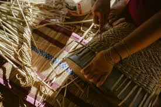
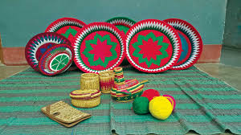

Fill in this form
Myself
My name is Ibrahim Robiat Yetunde
I turned 25 years old 27th of june and I am a software developer.
To discover my github account click Github.
To discover my linkedin account click Linkedln
I have a younger brother named Roqeeb. I have a group of friends at work
and out of them Manvi is my best friend. She visits my house at
weekends and we play outdoor games together.
I believe in her and I can share anything with her.
Science and technology fascinate me so I took part in an
interschool science competition in which my team of 4 girls
worked on a 3-D model of the earth representing past, present,
and future. It took us a week to finish off the project and we
presented the model at Ghaziabad school. We were
competing against 30 teams and we won the competition.
I was confident and determined about the fact
that we could win because my passion helped me give
my 100% input in the task. Though I have skills in
certain subjects I don’t have to excel in everything,
I struggle to perform well in mathematics. And to enhance
my problem-solving skills I used to study maths 2 hours a day.
I wanted to become a scientist, and being
punctual and attentive are my characteristics as I
never arrive late for school. Generally, I do my work
on my own so that I inculcate the value of being an
independent person. I always help other people
when they are in difficult situations.
I reside in nigeria and one things that fascinates me about
my culture is it art and culture
Arts and culture in nigeria
Nigerian versatility in art is so great that it is
generally felt that all African nations should view
Nigeria as the principal trustee of the most durable
fruits of black artistic genius. It is not precisely
known when the first works of Nigerian art reached the
outside world, but in 1897, following a British punitive
expedition to Benin, over 2,000 Benin bronzes and ivories
were shipped to England and later dispersed all over Europe and America.
At the National Museum in Lagos, works from all over the
federation present a vivid picture of the national diversity
of arts and crafts. Today, the heritage and
tradition of excellence in Nigeria arts continues and
typified by the works of world renowned artists.
FESTIVALS
- Argungu Fishing Festival
- Eyo Festival
- Sharo /Shadi Festival
CULTURE
In the humanities, one sense of culture as an attribute of the individual has
been the degree to which they have cultivated a particular level of sophistication in
the arts, sciences, education, or manners. The level of cultural sophistication
has also sometimes been used to distinguish civilizations from less complex societies.
Such hierarchical perspectives on culture are also found in class-based distinctions
between a high culture of the social elite and a low culture, popular culture, or folk culture
of the lower classes, distinguished by the stratified access to cultural capital.
In common parlance, culture is often used to refer specifically to the symbolic markers used by
ethnic groups to distinguish themselves visibly from each other such as body modification, clothing or
jewelry. Mass culture refers to the mass-produced and mass mediated forms of consumer culture that
emerged in the 20th century. Some schools of philosophy, such as Marxism and critical theory, have
argued that culture is often used politically as a tool of the elites to manipulate the proletariat
and create a false consciousness. Such perspectives are common in the discipline of cultural studies.
In the wider social sciences, the theoretical perspective of cultural materialism holds that human
symbolic culture arises from the material conditions of human life, as humans create the conditions
for physical survival, and that the basis of culture is found in evolved biological dispositions.
Nok Culture
Evidence shows the Nok people had knowledge of iron smelting and
adorned themselves with tin and stone beads, earrings, nose rings
and bracelets. The Nok Culture is dated between 500 B.C. and 200 A.D.
![](data:image/jpeg;base64,/9j/4AAQSkZJRgABAQAAAQABAAD/2wCEAAkG
BxIPEBAPDxAPDw8PDw0PDQ8PDxANEA8PFREWFhURFRUYHSggGBolGxUVITEhJSkrLzAu
Fx8zODMtNygtLisBCgoKDg0OGhAQFy0dHSUtNS0rLS0uLS0tLS0rKy0tLSstLS0tLS0tL
S0tLS0tLS0tKystLS0tKy0tLS0tLS0tLf/AABEIALcBEwMBIgACEQEDEQH/xAAbAAACAw
EBAQAAAAAAAAAAAAABAgADBAUGB//EADoQAAEDAwIDBgUCBQMFAQAAAAEAAhEDITEEEgV
BUSJhcYGRoQYTsdHwMsFCUpLh8SMzYhU0coKyFP/EABkBAQADAQEAAAAAAAAAAAAAAAAB
AgQDBf/EACERAQEAAgICAgMBAAAAAAAAAAABAhEDIQQSMVFBQoEi/9oADAMBAAIRAxEAPw
DM0p5Wdjla0qA4TApSiEDhOCqwU4QWtKsaVnBVjHILwika5PKCIhQIoGCcJAmCBwjCUFMCgk
KQo54GTCHzAqXkxnzV5x5XuQyKm0xPJBWmUvcVss+TKQhKYKUBCBCZSECKIoIIooogCBTFAhAq
CYoFQAhKKUoCilUUDzYVrCqk7VYXgpwqmFWBA4TBKEwQOEQEAmCB2q1qqarGoLAEYStThBIRURJ
jNkECwcS4j8vsNIDyJJ/lH3W11QAEi8AmBefBeNrVtxL3kFzidwmC0zgjK5cmc1qV24+O73Y7bN
TFN1RxwIBOCSruDajeZJu77XsuPq3vfRo06bXO/wBRznFg3C2JPLkupwjTVWOBLHRzGPVYrjNNsy
dku2EFtml0PGYcYEx0+601aeSIt054+6w6iuIdLXAkEXsC7kAtumr9imSZkNmD3RP1XHHkywy3FsuOZ4
6qpEFF9iRy5IQvUmcs3t5lwsutCCogpKuqiCKiBVEUCgkqSgogKVFBACgiVECwijuUUJeZlMFWEwVkLmlW
tKzgqxpQXhOFU0qwIHCcKsJwgsCcFVhOEFjSn3Rc2Az4KsLDxvUbKYHN7gPIXP7KMrqbTjN3Qa3iJALh2WA
xMS53ks+k1TKhvWLXWgFrYPdBWOrVFRnyyQL2i/n/AGXnNZWdRfDpabgbR+onkI/LBYrvK9t01jOnuH1DTM
7mObl0TTcL+YK5jtKx9Q1NogwXFxls84A/UVioOc8NDiXECH3gk9J5Rz8l0dKTIMstYNDm9keE+yiTSbZXT0r
mgc3CP4iQP6bBdHTFgvsYP/VsXnmAuO11xI293S1s8rLp6UWiMxmATJN5559lzyXjezaeonEEi/0SlkXABGBHZ
MeGPol2RaZ77jnyWkOsDkT0VLpM2wPYQdzj4bbzzju81voVGkQ2Li0mb+iqrUGkO/lcCCBMkQb9xC5rappyP1XD
muuZZFjHkuddI61Vo52PXks6xtrve7aMNuT1kYC1ucCbey0+LzX29L/GbyuGa95/RlBCVF6DAhQRSoColKEoGlB
CVJQFBRKgKiCiDzQThIE4UghO1KEwUi1pVgKqCsaoFrVYFU1WBBYE4SApwgYLh/Fc7KTuQc71IH2K7gWTi2j+f
SdTwcsPR4x9vNVym5pbG6u3i2aggyTbwyVSdXvJ3XDI2gwYcbNifVUPoVH1PlXaQdr5/gjNuv3VuoY1tQUmAwy7
ibyYiSeefos2u2rfTpaanLRnbybMT1cet/qtrdM3AaA61xyj89li0laTF7dOY+9l3KDQ6BguBIDgQbH+5VcrpbG
bDTudYfqDZvk94Xf0o3Nse+G45xPeFzaVANNiRYTBgx+R6LbpWbRE2t1XDKu2MagZyJMiPIyD4p3GZ9b+HUpZHf
5lQwDcgY78qqTgR1g8+uRhc7X0RYklsOMkcwb7T5x6ra+u0XkFsgzNs8/XKq14FRh2mC4CIvDg4dFSrY1XTLGsA
bAEGfE9EOH1A7cRysfG64jjVDm0SJJPZ2iQ4dR+84Xf0Wn+WwNycuPUld/G4r7+304+Tyz09V6iii9F5wIFFBAIQ
RUQKoiogCBRKCAKKKIPOBM1KEzQpFgCIUCICBgnCQBOAgsarAqmK1qCxqsCrarAgKIUVGuqbaVRwyGOjxiAlI89
xfUtc972hosG7wILgJhxIz3dy8o6aj6jWugxSlwyGl8OPoV1dbUgR3RH7rk8LdNWpfLAPcx9Qssu91rs1qOrwvg
1F7iwVKm8f83T7WXd1ejftA+fUO2Q0Vdrg3It0C8pw2k5mrNawpOabzaZEtPeIK77tc6rZgAZg1SJEjOzqfoqZ7
2vhrSUOJ1GVmUngPLpuwzAH8R6AXHmF67Sv3R4d3kV5zQ0WMJIb2yNryTd3e48+drZXc0r/PAiIMRb7SuOcdcaO
tr1GwGgN3z2nOZt3RgXjCqHDXPgvqdrM3d+wW515a4BwcTIIBzZcvUB+lIe0l1CYLTd1OT16T9fWmlttY4ZWZAp
6hh5hr2ukc4mcZ9Shon1G1C2uxrQDG5hGxxcDEDrz8lzOI8Q1VTUUG0BFEND6rhEOJcbScRHut/GTDB/MS1xMWA
j9rqLiSujWeG9pt+oAzj3gBWzN/RcepXgSMd5mbc10tK+WA+PpJha/Fys3iy+TJZMlyCKC2MgISiUqAqISogiCi
kqBECoUEBlRBRB5wJ2pAmapFwThICnCkMAmAShOEDNCsCRqdqgWNVgVTVYEDrLxRs0asZ2OPpdagoQlm0y6fMuI
1+d4sLLFwr/AH3wZGx2MWI6rv8AxH8OVKZc+g01KRJOxolzOojJHh/dec4Q7bqWtcILg9pBsR2ScHwWf11K7+26
7T6FMntNJJMlu5wa49SOa6NOvAFhDdoAAgDpbzx3LJUHab053AvP56I1XkuAgB07Ib/ERItGfLquXy6/DqUnD9R
IkgADEHvHM/55LuaJpIae116yCc+GfVeYAcyNzXMkiA9hE84vm69bwL/b3YJ74vAuqZdL4thbaTui4GDgTE4Vb
6W7IJmxFjbBkfmUwaXG/POXRZJUnA5cvzwXHbolHQNYCGOqBhJPypGwnPiAuXx98BuLuzbvvC7jyQwE5yfPmvMc
fe51Sm1o3EBztsF09MearjLatbNC7UAlzW2YDbExOL+K9BoGxTb3yfUkricM4Q9xDqgLG9Ce077ea9Gt/Bx2d1h
585eoCiKBWlnAoFEoIAgmQQBAooKACoiggCiiiDz5F0Q1QBOFYFqcIAJwgZqcJQnCBmpwErU4QME4SBOEDBEIBMF
AkLPxKkDRq2vscR5Cf2WlR7ZBHUEeqWbiZ1XgqzBfzjz/AMqrR6/5LtwG97W7QXT2WTMNjEklaXCI6zDvEWWHURJ
wJAmMrDPpsrq0fiehqqb9PUljyOwX22uGDPitnCONCnpnbwN1OWsaAJJxEjv+nReWo8MDyNjOhmLjzXpdP8OuLA4
mZO7aLjcFGeOK2FrTU+LG0GAOp1X2E7Rfx9l1uE8ZZq2bmtLQCDc5HTHkuNV0GGuadwIkgT5e/sutwzSilho7R7
XISuWWtOmO9uzq3dkuNztvOZwPzwWTRCGXySfsra1XdIJN9sjrgzPl7oMNh4K/hz/VcvJv+YeVJSqSvRYRJQlCU
JQGVJSyhKIPKEpZQlEnlCUsoSgaVJSSpKgOoklBBwQ5MHrOCmBVhpD0wqLMCnBQaBUTh6zApwUGkVE4esoKcFBq
D0wesocnDkGoPTByzNcrA5BeHJg5UgpgUHmOOaf5daf4ahLx55Hr+y5GpbcGJ5RYm0d/evWfENEOolxzTILfMwR
7+wXlZn9MSLhZOTH1yauPLeJqWrLGueSabGAl9ot3LHpfjksdAa8ssASeU5I6LdT1bajHUdQwuY4Xc03vz9gm03
wrw6Wv36h4NzTqOAAvjsgEjwKpPT9177fq9TwzjArDc1hcxwILwJGea3PcBi4iQSIieQCz6FzezS07AxgxENAjkt
lUbA4fqNjM3uLj3lZcrNtE3pXzImb2x0z9FdKzUWmZOfDmrSVu8XDWPt9sXkZ7y19H3IblWXIblqZ1hchuVRehv
RC0uQ3KrepuQW7kN6q3KbkSt3pd6r3IFyC3cpuVO5TcoF29RU7kUHIFNMGLb8hH5KkYwxEMWv5KHy0FAYmDVYWpU
EDUwCUlKaiC8BMAsprJDqUHQATtC5o1adurUDpBqcBYKeq70uo4vTpfrdf+UDcfRNg/EH/bVIz2I/rC8fuuHDmTk
SDHTyIXR4z8RCqx1JrNofHac4brGcDGOq40F0tBAkOPIADbdZ+TutHH1HTZTBaAIggk2AMxcEldLR6GSAB1nE+MZ
Axfx6LgaPVmkYeA5sggzb/OV6XScTpgTA5RGcfZZc5Y04art6el8sWgTGCMXse+ZSvquuOd4N8fusVfiocIpDu3d
LYF82T6cFsA5M7tptMEC35hcbHZvoM7I5p9qoOp2FrQAZFhMkn8IWmlVDu4nkbd69Hg5MfSR5/Nhl7W6IWJSxaS1
LtWhwZjTQ+WtJalIQZyxDatGxAsQUbENiv2qbUGctU2K+EIQUFimxXFqAaoFWxRXbVEDbECxadqmxBlNNVPordsU
NNBzH0SkNKF0zTSmig5FQLM6V2X6ZZ36ZByHgpC1dKpQWapRKDG4obirH0iqSyEAr6gtaTMRk2sInn+TC87o9ZTq
VS17nUw4f6bndqak23nvx5rr8TYXUyATAILh1C8dqWOadzb3tzuCuWXd064dR6mpogbwAYF4mB1kZGfdZ//AMz2Q
QDjIEkeK6ek1tN7WPG9jnS57S0PDXHIAkH+my209rsQIEwTcNxO07Tz71n99fLT6fThU2RJdDiYjuEz5LbpmBxAM
3IIPMExj85Lqs0YLoMTMRknz8l1tJo2Ng7ZmIdIP9rTlc8sl8cWTQaQXhpNxGBH3XWEiwLhaHd4tb2CtoNLwdrSA
JuQREd5iOSoqVOptzx9ce65Xuus+FYoXkEgkQBkAX5czdAOgtcS0AmN07Wky2b+DT9OSFWtJ7MAYJyAP/I9n/6Xk
fiv4iDXN09Ih5Dg6q6+2cBu458e5WxxuV1FcspjN17/AE9WeyTJAF8T191aVwPh/UOc1kjmeX/A/wB+uBi67TnLd
wZXLHv8MPPjJl1+TFKhKC7OJkCUqhCCKKQiAgUhBPCkIEhABOggCiMKINakJQ5GUBhQBQKSgIapsRa5OEFBppXUV
phGEGB2lVL9EOi6u1KWIOFV0Cx1dAV6c0ZSO0qDxup0h5SvNazg7g6WFrRMwQV9Sdw8HkFlq8MYctUWbTLY+bvbs
a1rhH8zhJb4zyRZXqssKp2j9IcA8DzOF72pwCm6cj3WCt8Isy17mn/jI9phcrxfTtOX7efp8Srzlu61/ltacTY+a
6VHWVnQTVsDOLeBi8K8fCzx+muDGA9kq2j8PallxVpEHILXRjxXHLhydcebFVW4jVfAJa0NII2gi4EXEwhte8TvI
DSIkZ8Dy8oV/wD0LUHsmswCQYa11iJg38TnqVrp8BqxDq7oiCGsa2epJiZVJ42S98ma04+rpBo3PdMCwcfW3csZF
J9/9KYgEwbYnxH0XsNJwgUjI3OcObnSVtNAnIB8RK64+Pr8uWXkb/DkcDpiC8O3TAxtGLmF1VaKKY0lowxmM1GfL
K5XdUQpCv8AlIimrKs+1TatOxA00FG1Tar/AJamxBTtU2q/5aGxBRsQ2LTsUNNQM+1RX7VE2KgUZUUQNKiiiBmpw
VFEB3IhyiikSUWlRRAxKZRRAClsoogkIEKKIAGBWhgUUUJNsHRKQoogBCCiiCJo7lFEA2qbFFEBACYBRRBCxDb3B
RRAsKQooiAUiFFFFEjuUUUUJf/Z)
Brass or bronze
Casting is still done but there is nothing produced now to compare with the
fabulous Ife and Benin Bronzes. These perfect examples of portraiture and
the "cire perdue" method of casting, together with the equally perfect
terracotta, thought to be of the same period and possibly by the same
craftsmen, have no equals anywhere.
Grass Weaving
As grass is plentiful in the northern parts of Nigeria, northern craftsmen and women make grass baskets, fans, tables and floor mats. Some of the objects are beautifully coloured and durable.
 
Other form controls